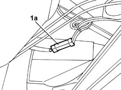
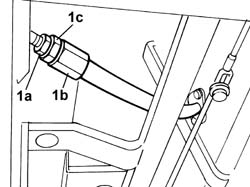
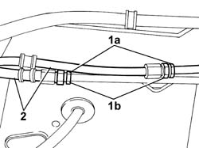
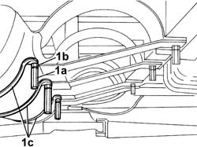
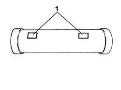

1043A06 GPL TANK COMPLETE WITH SUBMERGED FUEL TANK AND VALVE UNIT R R
- Path
- Procedures > 10 ENGINE UNIT > 1043 GPL TANK AND PIPES > 1043A GPL TANK > 1043A06 GPL TANK COMPLETE WITH SUBMERGED FUEL TANK AND VALVE UNIT R R
- Kind
- repair procedure (removal / refitting; the operation number is the code)
- Applies to
- engines: 2.0 16V; all production periods
- Interactive page
- https://sloeber94.github.io/elrnDB-fDct/en/#/244002619
Applies to: engines: 2.0 16V; all production periods
 Removing
Removing
 Refitting
RefittingDrain the section of pipe from the repressurizing filler to the tank and the LPG supply and return pipes from the tank to the solenoid valve assembly / G4-G5, following the procedure and the instructions described below:
Op. 1043A02 LPG SYSTEM LINES PIPE DRAINING OPERATIONS
Return the vehicle to the workshop and place on a lift.
Disconnect the negative battery terminal.
Op. 1043E12 GPL TANK GUARD PROTECTION R R
1. Disconnect the electrical connector for the tank supply device (1a).
Description | Connector | |
|---|---|---|
1a | Device for electric supply of LPG tank | M017 |

Applies to: engines: 2.0 16V; all production periods
1. Undo the connector (2a) for the LPG filler pipe (2b) keeping the connector (2c) locked.

Applies to: engines: 2.0 16V; all production periods
1. Undo the connectors (1a) keeping the connectors (1b) locked.
2. Disconnect the LPG supply and return pipes.

Applies to: engines: 2.0 16V; all production periods
Position the tool for supporting the tank on a hydraulic lift designed to support the weight of the tank and suitably protected so as not to spoil the paintwork; place the tool under the LPG canister.
Description | Code | Function | |
|---|---|---|---|
- | Support | 1.870.833.000 | LPG tank removal |
1. Undo the bushes (1a) housing the guard fixing bolts and the fixing nuts (1b), keep the bushes and the nuts and remove the collars (1c).
Lower the hydraulic lift and remove the tank complete with supply and return pipes and electrical wiring.

Applies to: engines: 2.0 16V; all production periods
With the help of a second operator, remove the tank complete with supply and return pipes and electrical wiring; position the tank on suitable supports.
Applies to: engines: 2.0 16V; all production periods
Refitting
Removing- With the aid of a second operator, position the LPG tank on the support tool.
Description | Code | Function | |
|---|---|---|---|
- | Support | 1.870.833.000 | LPG tank removal |
1. Raise the tool carefully and position the tank in the special housing aligning the reference plates with the underbody.

Applies to: engines: 2.0 16V; all production periods
Fit the collars and tighten the nuts and spacers to the recommended torque.
Value daNm | Fastening | Component | Ø | |
|---|---|---|---|---|
- | 4 | Nut | M12 X 1.5 |
Value daNm | Fastening | Component | Ø | |
|---|---|---|---|---|
- | 4 | Spacer | M12 X 1.5 |
Remove the support tools from underneath the tank.
Description | Code | Function | |
|---|---|---|---|
- | Support | 1.870.833.000 | LPG tank removal |
Connect the LPG supply and return pipes and tighten the connectors to the recommended torque.
Value daNm | Fastening | Component | Ø | |
|---|---|---|---|---|
- | 1.5 | Connector | M10 X 1 |
Connect the 80% filler solenoid valve to the LPG supply pipe and tighten the connector to the recommended torque.
Value daNm | Fastening | Component | Ø | |
|---|---|---|---|---|
- | 2.5 | Connector | M12 X 1 |
Connect the electrical connector for the LPG tank supply device.
Description | Connector | |
|---|---|---|
- | Device for electric supply of LPG tank | M017 |
Op. 1043A04 GPL SYSTEM AND PIPES CHECK FOR LEAKS
Op. 1043E12 GPL TANK GUARD PROTECTION R R
Connect the negative battery terminal.
Remove the vehicle from the lift.